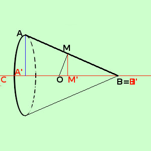

|
 M e' il punto medio di AB O e' il punto di intersezione dell'asse del segmento AB con l'asse di rotazione CD In pratica in questo caso si tratta di un cono di altezza A'B', apotema AB e raggio AA' quindi abbiamo, per la superficie di rotazione Area = π AA' · AB essendo MM' la perpendicolare condotta dal punto medio M del segmento AB essa vale la meta' di AA', cioe' AA' = 2MM' quindi ho Area = 2 π MM' · AB Ora considero i triangoli AA'B', MM'B' essi hanno: AA'//MM' perche' segmenti di perpendicolare condotti alla stessa retta CD ABA'=MB'M' ^ ^ perche' in comune Siamo nelle condizioni del teorema di Talete, quindi i due triangoli sono simili; potevo anche dire che, essendo retti,hanno i tre angoli uguali e quindi sono simili Considero ora i triangoli MM'B' e MOB' essi hanno: MM'O=MM'B' ^ ^ perche' retti MOM'=M'MB' ^ ^ perche' complementari dello stesso angolo M'MO ^ Cioe' sommati con lo stesso angolo valgono 90° (stessa dimostrazione fatta nel secondo teorema di Euclide) quindi i due triangoli hanno congruenti gli angoli e quindi sono simili Allora, essendo AA'B' simile a MM'B' ed essendo MM'B' simile a MOM' avremo che (proprieta' transitiva) AA'B' e' simile a MOM' Posso quindi scrivere la proporzione AB:MO= A'B':MM' Non ho capito la proporzione applico la proprieta' fondamentale (prodotto dei medi uguale al prodotto degli estremi) AB·MM' = MO·A'B' sostituiamo nell'espressione dell'area trovata prima Area = 2 π MM' · AB = 2π OM · A'B' cioe' Area = 2π OM · A'B' = come volevamo |